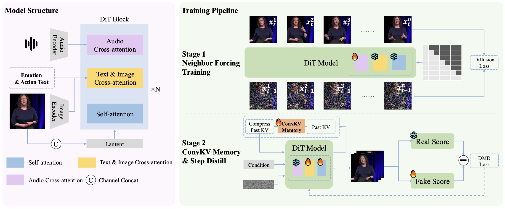

LiveAct presents a novel framework that enables lifelike, multimodal-controlled, high-fidelity human animation video generation for real-time streaming interactions.
(I) We identify diffusion-step-aligned neighbor latents as a key inductive bias for AR diffusion, providing a principled and theoretically grounded Neighbor Forcing for step-consistent AR video generation.
(II) We introduce ConvKV Memory, a lightweight plug-in compression mechanism that enables constant-memory hour-scale video generation with negligible overhead.
(III) We develop an optimized real-time system that achieves 20 FPS using only two H100/H200 GPUs with end-end adaptive FP8 precision, sequence parallelism, and communication-computation parallelism at 720×416 or 512×512 resolution.

As shown in Figure, the training pipeline consists of two stages: Neighbor Forcing training and ConvKV Memory&Step Distill training. In addition, our framework incorporates an auxiliary Emotion and Action Editing Module to enable controllable manipulation of facial expressions and gestures. The first stage adopts the Neighbor Forcing AR formulation to train the alignment between audio and text conditions (e.g., emotion and action prompts) with the generated video, ensuring consistency in lip movements, gestures, and emotional expression. The second stage introduces the ConvKV Memory compression mechanism into the rollout of DMD distillation training so that, at inference time, the KV cache remains bounded to a fixed length, enabling stable infinite-length video generation. By integrating the KV cache under the Neighbor Forcing–based autoregressive formulation with the efficient compression mechanism of ConvKV Memory, together with the controllable editing module, SoulX-LiveAct enables real-time hour-scale and even unbounded video generation.
LiveAct seamlessly synthesizes realistic humanoid videos with naturally expressive behaviors, supporting infinite durations for live broadcasts and virtual avatar video conferencing.
Our motion editing module enables controllable modification of head pose and gesture dynamics while preserving identity and lip synchronization.
Emotion and Action Sequence: heart gesture -> covering face -> laughing.
LiveAct maintains robustness across various characters and scenes, generating character animation videos.